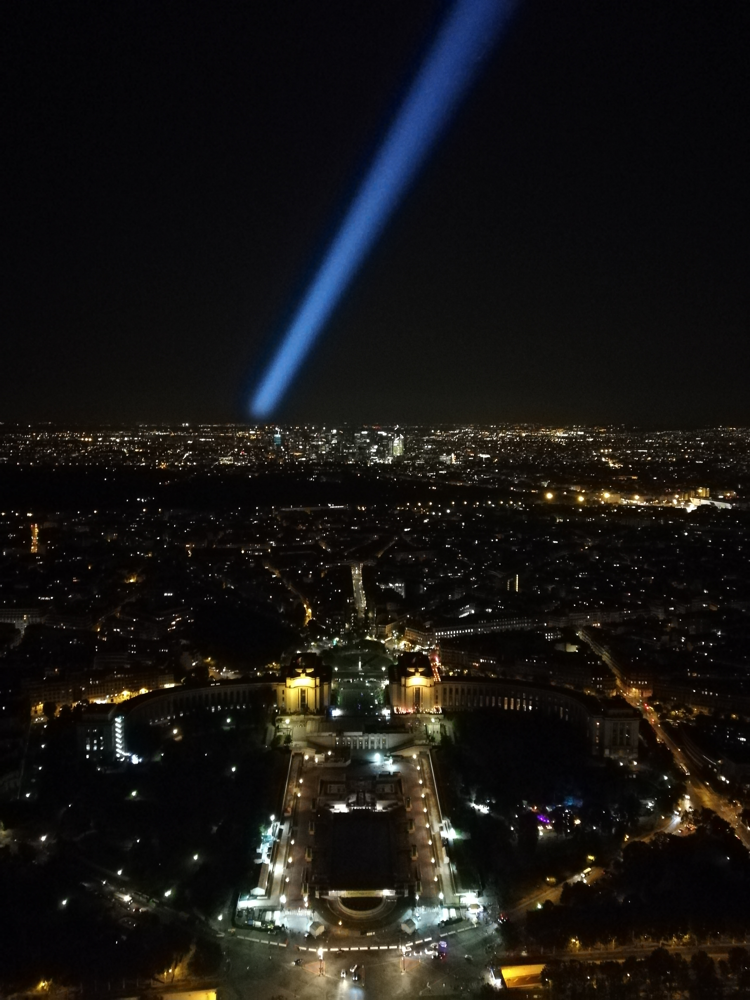
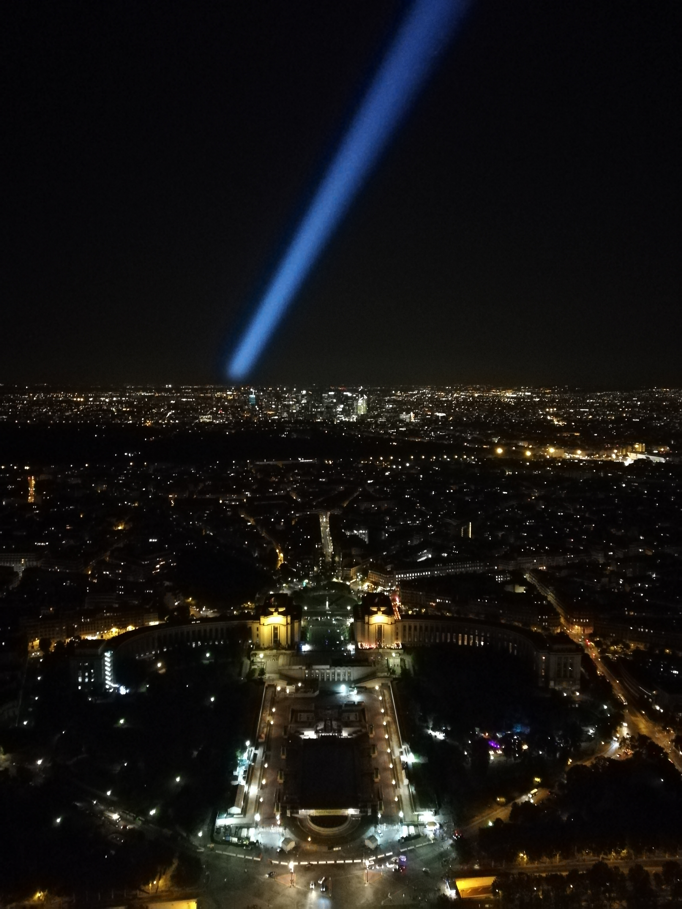
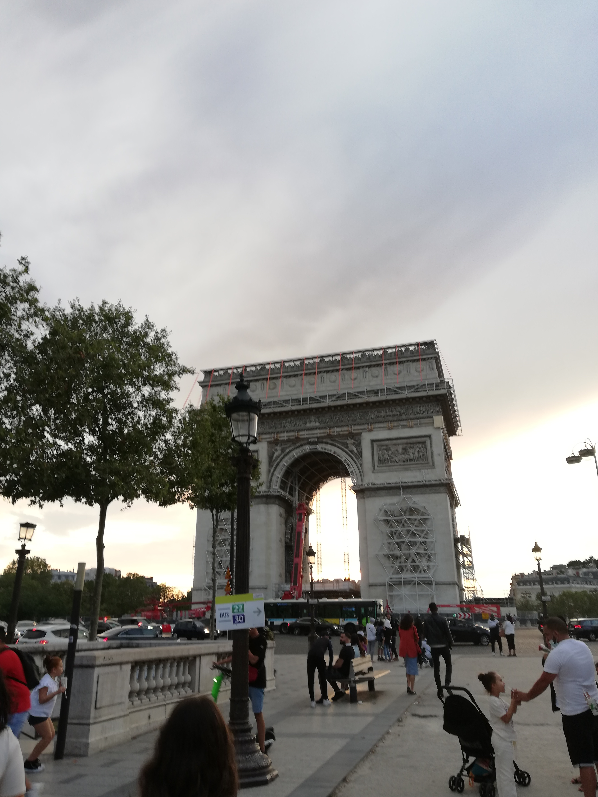
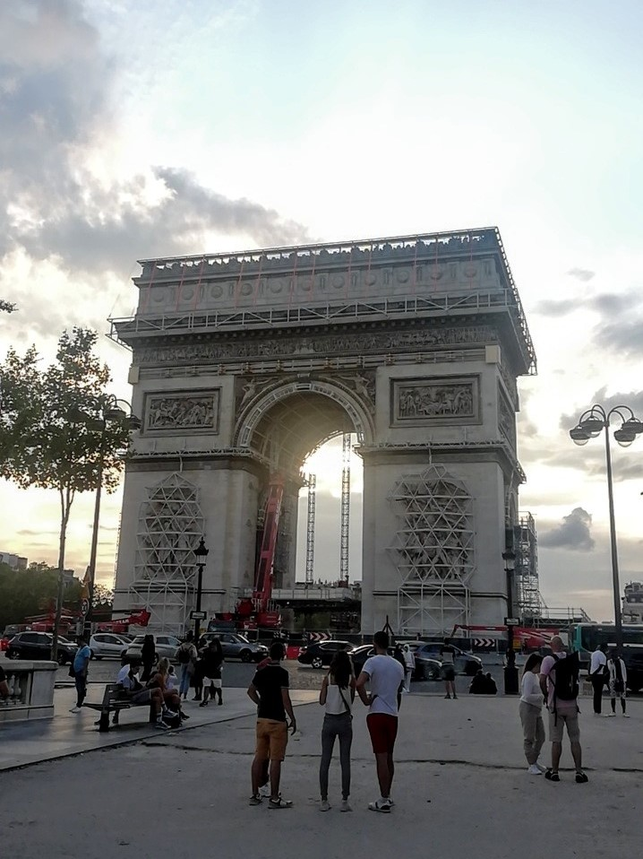
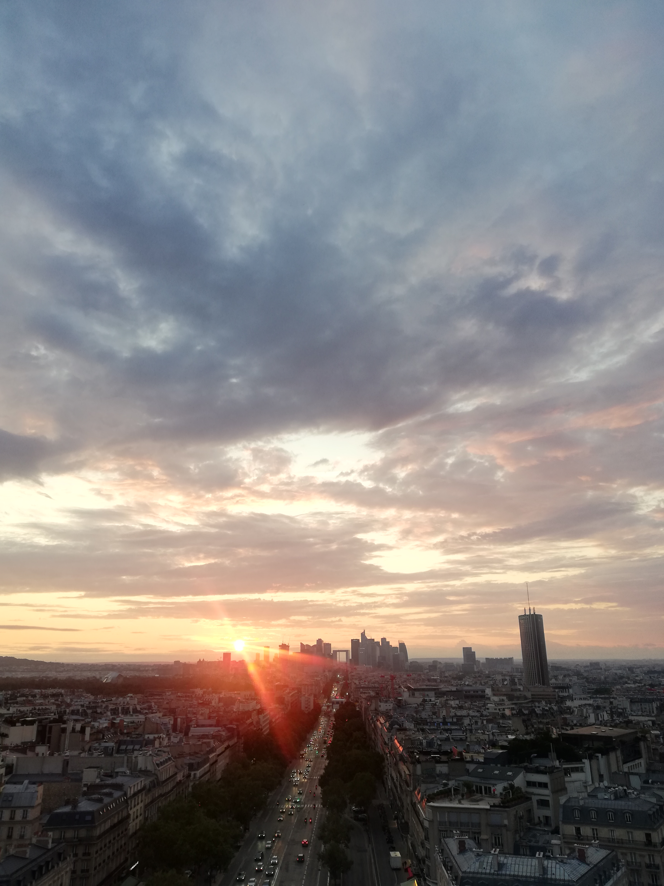
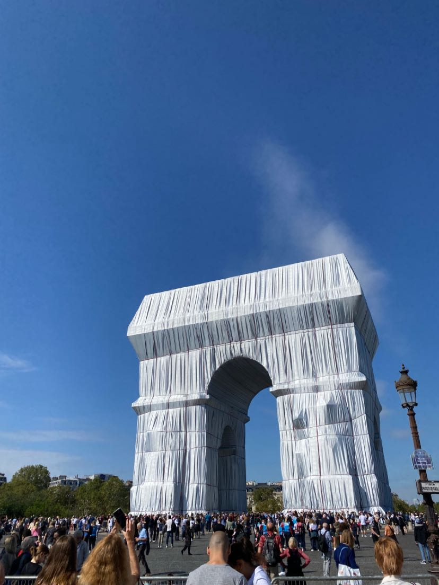

- L'Opéra Garnier -


Voici l'Opéra Garnier (ou aussi Palais Garnier). Il fut imaginé par Charles Garnier et inauguré en 1875. Il se situe dans le 9e arrondissement, dans le quartier de l'Opéra, à quelques pas des grands magasins du boulevard Haussmann. Cet opéra est un élément notable de la transformation de Paris par Georges-Eugène Haussmann au cours du XIXe siècle
- Trocadéro -

 

Faisant face à la Tour Eiffel et situé entre le palais
de Chaillot, le Trocadéro est une esplanade datant du XIXe siècle.
On y trouve aussi la fontaine de Varsovie ainsi que des jardins
et statues sur ses abords.
- Arc de Triomphe -
  
Achevé en 1836, l'Arc de Triomphe prend place au centre de la
place de l'Etoile et est le sommet de 12 avenues dont l'avenue
des Champs-Elysées. Il symbolise aussi la commémoration de la 1ère
Guerre Mondiale et comprend la tombe du soldat inconnu.
Depuis le toit, on peut apercevoir la Tour Eiffel ainsi que la
défense et son arche au loin.
Récemment, il fut empaqueté
en tant qu'oeuvre posthume.
Retour au Menu
Jour suivant : Jour 2
Me contacter: noelangevin72@gmail.com